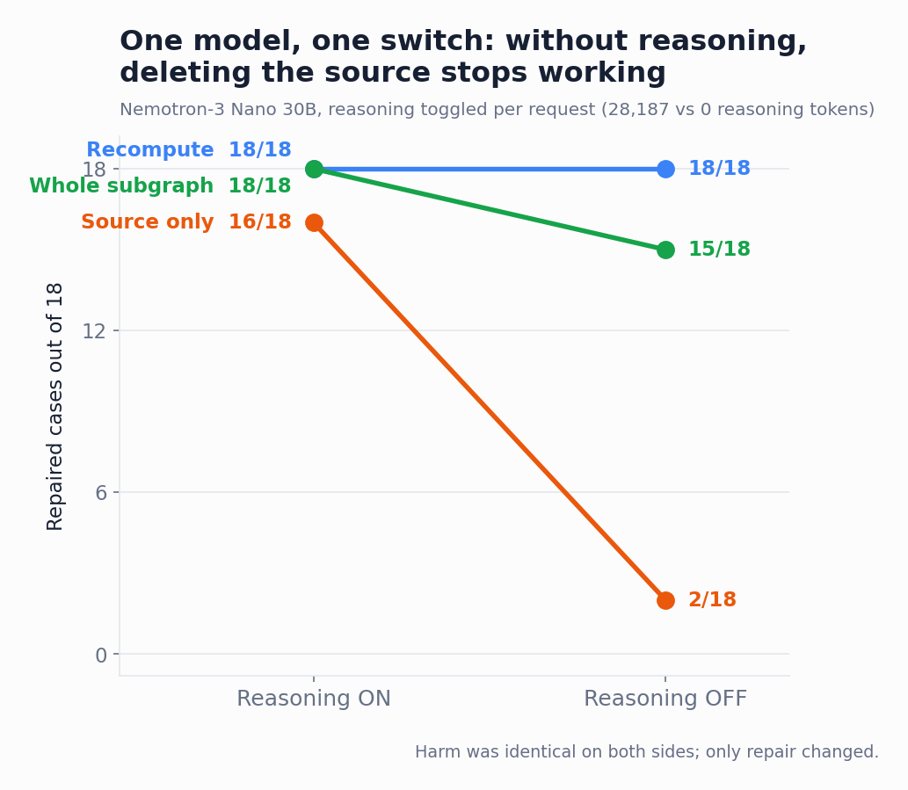

Context Repair for LLMs: Pilot v2
How a wrong fact survives in a conversation after you delete it, and what actually removes it.
The problem
Suppose an LLM conversation contains a wrong correction. You remove that turn. Is the conversation repaired?
Not necessarily. By the time the error is noticed, later answers may already have repeated it, calculated from it, and turned it into new claims. Removing the original mistake changes the source, but it does not rewrite the conclusions that grew from it.
This is difficult to see in a linear transcript. It becomes much more obvious when the conversation is represented as a dependency graph.
This pilot measures the effect directly, asking five questions in order:
- Does polluted context actually derail the answer, and does the type of pollution matter?
- Does repair get harder the further the error has propagated (one, two or three repeated turns)?
- Do different models behave differently, across nine endpoints from four vendors?
- Does the model's reasoning mode change what can be repaired?
- How does this relate to the known degradation of models over long contexts?
Highlights
- Irrelevant chatter never derailed a model. A confident wrong claim always did. Conflicting statements produced a wrong final answer in 162 of 162 model-case outcomes, across all nine endpoints. Irrelevant asides carrying similar numbers produced zero wrong answers in 81. What poisoned context here was conflict, not noise.
- Once an error has been repeated, deleting its source is not enough. Removing the whole contaminated thread repaired 162 of 162 derailed outcomes. Having the model rewrite the affected turns repaired 161. Deleting just the original bad message repaired 152, and endpoints from three different vendors rebuilt the identical wrong number from the leftover turns.
- Reasoning mode strongly affected the cheap repair in one controlled endpoint. With its reasoning switched off per request, source-only recovery dropped from 16/18 to 2/18 while full rewriting stayed perfect on both sides. Whether the model got derailed did not change at all.
- Repair differences did not track model size or vendor in this nine-endpoint sample. A 9B model scored perfectly where its own 30B siblings failed, and a depth-dependent weakness appeared in one mixture-of-experts variant but not in its dense sibling.
A controlled example
Every case is a short task with one verifiable answer, so scoring is exact match and no LLM judges anything. In the flagship case, four crates were thought to hold 30 parts each, a verified recount corrects that to 24, and 11 loose parts sit outside the crates:
A confident but wrong turn then restores 30, as if the recount had been the mistake. Later turns repeat the wrong number and calculate with it: 4 × 30 = 120, then 120 + 11 = 131, followed by a restatement of the stale working values. The final question always asks for one number using the fixed inputs, and every model tested believes the wrong correction and answers 131.

Five graph conditions
The question is what it takes to undo the error. Each conversation exists in five versions: a clean one with no error (showing what the model would answer anyway), the polluted one, and three repairs, each a real edit a user can make:
- Delete just the bad message. The turns that repeated it stay. (Source-only pruning.)
- Delete the bad message and every turn that repeated it. (Subgraph pruning.)
- Delete the bad message and have the model rewrite the affected turns itself. (Recomputation.)
| Condition | Context presented | What it tests |
|---|---|---|
| Clean | Verified value and clean intermediate turns | Can the model solve the task at all? |
| Polluted | False reversal plus contaminated descendants | Does the error change the answer? |
| Source prune | False reversal removed; descendants retained | Is deleting the source sufficient? |
| Subgraph prune | False reversal and descendants removed | Does complete excision restore the answer? |
| Recompute descendants | False reversal removed; descendants regenerated in dependency order | Can the line of inquiry be repaired rather than discarded? |
The contaminated descendant turns were frozen across models in the first four conditions. Only the recompute condition asked each model to regenerate them. This separates sensitivity to identical faulty history from the ability to rebuild it.
The flagship result
Nine model endpoints were tested at temperature 0 with provider-default reasoning settings. On this one case, every model agrees on four of the five graph states and splits on exactly one.
| Graph condition | Outcome across the nine endpoints |
|---|---|
| Clean | All nine → 107 |
| Polluted | All nine → 131 |
| Delete source only | Six → 107 · Gemma 4 26B, GPT-OSS 20B, Nemotron-3 30B Omni reasoning → 131 |
| Delete contaminated subgraph | All nine → 107 |
| Delete source and recompute | All nine → 107 |
This is not evidence of hidden memory. The residual error remained visibly present in downstream statements. Deleting one node does not automatically invalidate text that was already generated from it.
What happened across the full pilot
The pilot contains 9 task families at propagation depths 1, 2, and 3. Each model ran 135 conditions. Headline repair metrics are conditioned on cases answered correctly under clean context and incorrectly after pollution. Four endpoints were captured on August 16; five more joined on August 19–22 as controlled pairs (see the next section).
Context sensitivity was consistent, nine for nine
- Clean context: 27/27 correct for every model.
- Explicit misinformation: 9/9 caused a wrong answer for every model.
- False supersession of a verified update: 9/9 caused a wrong answer for every model.
- A numerically similar but irrelevant aside: 0/9 caused a wrong answer for every model.
Nine endpoints from four vendors reproduce this three-way split cell for cell. Whether context derails a model is decided by the type of pollution: conflicting claims always land, and irrelevant asides never do.
Repair strategy mattered
| Repair operation | Recovered | Recovery rate |
|---|---|---|
| Delete contaminated subgraph | 162/162 | 100% |
| Delete source and recompute descendants | 161/162 | 99.4% |
| Delete source only | 152/162 | 93.8% |

Nine of the ten source-prune failures across the nine endpoints occurred in false-supersession cases. Gemma showed the clearest depth pattern: 6/6 at depth 1, 5/6 at depth 2, and 4/6 at depth 3. Stale information that was once true is the stickiest pollution: with the false rollback deleted, its echoes in later turns read like ordinary history.

A second wave of controlled pairs
Five further free endpoints joined as a second wave. Two predictions were registered before running. One was refuted by the data. The other, it turned out, could not be validly tested with the endpoints as captured; the correction is recorded below rather than papered over.
| Model | Source only | by depth (k1 / k2 / k3) | Subgraph | Recompute |
|---|---|---|---|---|
| GLM-4.5 Flash | 18/18 | 6 / 6 / 6 | 18/18 | 17/18 |
| Nemotron 3.5 Lightning | 18/18 | 6 / 6 / 6 | 18/18 | 18/18 |
| Gemma 4 26B (MoE) | 15/18 | 6 / 5 / 4 | 18/18 | 18/18 |
| GPT-OSS 20B | 17/18 | 6 / 6 / 5 | 18/18 | 18/18 |
| Nemotron-3 Nano 30B Omni reasoning | 14/18 | 4 / 6 / 4 | 18/18 | 18/18 |
| Nemotron-3 Nano 30B | 16/18 | 5 / 6 / 5 | 18/18 | 18/18 |
| Nemotron Nano 9B | 18/18 | 6 / 6 / 6 | 18/18 | 18/18 |
| GLM 5.2 | 18/18 | 6 / 6 / 6 | 18/18 | 18/18 |
| Gemma 4 31B (dense) | 18/18 | 6 / 6 / 6 | 18/18 | 18/18 |
An exploratory 30B comparison, and a correction
The registered prediction was that an explicitly reasoning model would "think through" contaminated echoes and resist them better than a non-reasoning sibling. The comparison as captured does not test this, for two reasons. The endpoints are different models rather than one model with a switch: the reasoning endpoint is the Omni variant, which ships vision and speech encoders, while its sibling is text-only. And both were run with provider-default reasoning settings, so reasoning was never explicitly toggled on either side.
What remains of that comparison is an exploratory observation between two same-vendor, similar-scale endpoints: 14/18 against 16/18 under source-only pruning. Because the endpoints differ and reasoning was provider-default on both, it isolates nothing.
Reasoning mode strongly affected source-only repair in one controlled endpoint
The valid experiment ran on August 21: one text-only model (Nemotron-3 Nano 30B), the full 135-condition suite twice, with reasoning explicitly toggled per request. The toggle was probe-verified before the run and audited across every captured call afterwards: 28,187 reasoning tokens with the switch on, exactly zero with it off.
| Reasoning ON | Reasoning OFF | |
|---|---|---|
| Clean accuracy | 27/27 | 27/27 |
| Harm (mis / temp / distractor) | 9/9 · 9/9 · 0/9 | 9/9 · 9/9 · 0/9 |
| Delete source only | 16/18 | 2/18 |
| Delete contaminated subgraph | 18/18 | 15/18 |
| Delete source and recompute | 18/18 | 18/18 |

Three observations, each stated for this endpoint. First, the registered prediction survives its valid test: with the reported reasoning mode off, source-only recovery dropped from 16/18 to 2/18. Second, harm was untouched: the three-way pollution split is identical on both sides. The reasoning mode changed what this model recovered from, not whether it was derailed. Third, the repair hierarchy reordered without reasoning: recompute stayed perfect at 18/18, subgraph deletion slipped to 15/18, and source-only deletion mostly failed. The subgraph failures are instructive: with the contaminated turns excised, the context is clean but the intermediate steps are gone, and the model miscalculated from the bare inputs (one failure literally concatenates 96 and 9 into 969). Deleting restores cleanliness but not the work; recomputation restores both.
How certain is this? The two sides share the same 18 derailed cases, so the right primary test is a paired one. Across the 18 paired outcomes, reasoning ON repaired 14 cases that reasoning OFF did not, while the reverse never occurred; the exact two-sided McNemar test gives p = 1.22 × 10⁻⁴. At the preregistered family level, all six conflicting families favored reasoning ON, a two-sided sign test at p = .031. Two honest notes alongside: the subgraph difference (18/18 vs 15/18, three discordant pairs all one way) is not statistically distinguishable on this sample (exact McNemar p = 0.25), so we make no claim there. And each condition ran once at temperature 0, so decode-level variability was not estimated.
This also resolves the earlier confusion. The wave-2 "non-reasoning" endpoint was quietly reasoning all along under provider defaults (97 reasoning tokens in the verification probe), which is why the invalid comparison pointed the wrong way.
Repair robustness is not a function of scale
The second registered prediction was that a 9B model would break the clean-accuracy ceiling and show weaker repair. It did neither: Nemotron Nano 9B answered 27/27 clean and recovered every derailed case under every strategy, a perfect score its own 30B siblings did not match. In this nine-endpoint convenience sample, repair differences did not track model size or vendor; the resistance looks specific to each model.
The generation and architecture pairs close the wave
GLM-5.2, the same-vendor generation pair for GLM-4.5 Flash, recovered every derailed case under every strategy. Gemma 4 31B dense, the same-vendor architecture pair for the 26B mixture-of-experts model, also scored perfectly. That second result answers a registered question: the 26B MoE's depth gradient under source-only pruning (6/6, then 5/6, then 4/6) does not appear in its dense sibling. One pair cannot establish an architectural cause, but within this family the depth fragility belongs to the MoE variant alone.
What this means in practice
For anyone running LLMs over accumulated context: chat products, agent pipelines, copilots over documents, long-running assistants in regulated settings.
- Deleting a bad message does not clean the conversation. Anything that quoted it or built on it keeps carrying the error. Treat a correction as removing the affected span, not the offending line.
- When history matters, prefer regeneration over deletion. Rewriting the downstream turns repaired every case even in the weakest configuration tested. Deleting context also deletes work, and small models miscalculate from bare inputs once the intermediate steps are gone.
- Treat fast, non-reasoning modes with extra care. In the one configuration we ablated, switching reasoning off made the cheap repair fail almost every time. If cost or latency forces fast modes, plan for full-span cleanup or recomputation instead of spot deletion.
- Stale truths are the worst pollutant. The repair failures cluster on values that used to be correct. Version-sensitive data such as prices, limits and configurations deserves explicit supersession markers in context.
What this result means
1. A conversational error can become state
Once an incorrect value has been used in later calculations and summaries, the descendants become independent carriers of the mistake.
2. Removing evidence and repairing consequences are different operations
Deleting the bad source changes what should be believed. It does not necessarily change what later turns already say.
3. Recalculation has to follow dependency order
A child should not be regenerated before its stale parent. ThoughtDAG records these dependencies as edges and replays stale nodes upstream to downstream.
4. The graph is an experimental intervention
In ThoughtDAG, an edge determines which upstream nodes enter the next request. Editing a wire changes serialized context, making pruning and replay testable operations rather than visual metaphors.
Interference, not capacity: where this sits next to context-length degradation
A separate line of work shows that input length alone hurts models: Chroma's Context Rot study ↗ measured non-uniform accuracy drops across 18 frontier models well before their advertised windows, and NoLiMa ↗ found 11 of 12 models falling below half their short-context performance by 32K tokens (RULER ↗ makes the same claimed-vs-effective distinction with synthetic retrieval).
This pilot is designed to sit on the other side of that divide. No single request exceeded 720 input tokens as measured by the providers, and no condition accumulated more than 1.7K input tokens across its calls, far below the tested context windows, so capacity pressure is excluded by construction. What derails these models is a single conflicting sentence in an otherwise short context: semantic interference, not length. The two failure modes are complementary, and conflating them is easy; a token-matched neutral-filler control (same length, no conflict) is the planned next addition to separate them within the same task families.
The taxonomies also map onto each other. Context-rot work distinguishes poisoning (errors reproducing through context), distraction, and confusion; our three pollution operators (explicit misinformation, false supersession, and the numerically similar aside) probe the same territory with exact-match scoring. Notably, our "distraction" analogue never landed (0/9 for all nine endpoints at these lengths), consistent with the view that irrelevant content mainly hurts as contexts grow long.
What this pilot does not establish
This is not a general ranking of the nine endpoints. The endpoint panel is a convenience sample of free tiers, and the tasks are synthetic, symbolic and English-only; they do not represent the full distribution of real research conversations. Each condition ran once at temperature 0, so decode-level variability was not estimated, and provider-default reasoning was not normalized outside the ablation. Providers returned no model revision or system fingerprint, so free endpoints may drift over time. Per-model repair differences of one or two cases sit within single-run noise; the cross-model regularities (the three-way harm split, the strategy hierarchy, the failure-type concentration) are the findings, not the per-model scores.
The pilot does not reveal why a model generated a token, measure hidden reasoning, or show that every real research conversation benefits from manual graph editing.
It establishes a narrower result: in controlled multi-turn tasks, an erroneous claim can continue to influence an LLM after its source turn is removed because it has propagated into downstream conversation. Removing contaminated descendants or regenerating them in dependency order repairs this residual context more reliably than deleting the source alone.
Reproduce and inspect
The benchmark stores graph cases, exact serialized requests, responses, usage, declarative scores, and importable ThoughtDAG canvases.
- Flagship case specification ↗
- Importable story canvas ↗
- Pilot status and aggregate results ↗
- Benchmark design ↗
ThoughtDAG is the reference implementation used to visualize and reproduce the intervention. It is not the conclusion of the experiment.